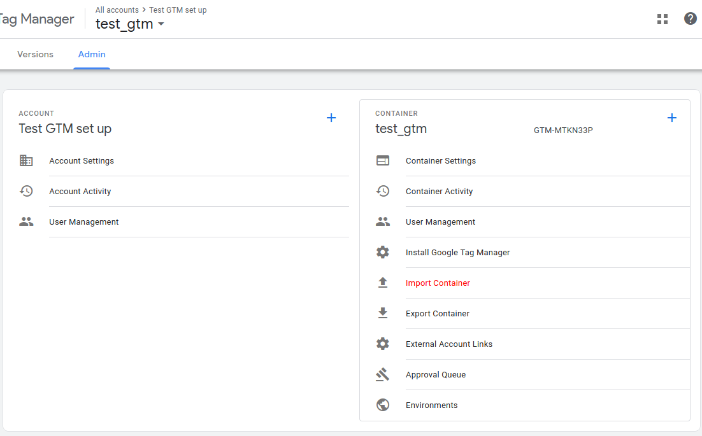

The goal of this website is to create a guide for developers to show TM works and to give a background on different concepts and possiblities that it unlocks.
If you want to play around with those you can find more info on how to set it up on the project page.
You can clone the repository, load the different configurations and run the project locally.
Once you created a new container you can import the settings for each page by going on this page on your container:
The naming convention and the way tags are set up, the code that is in the tag itself are not what I would generally suggest. The examples shown here are only to explain how GTM works.